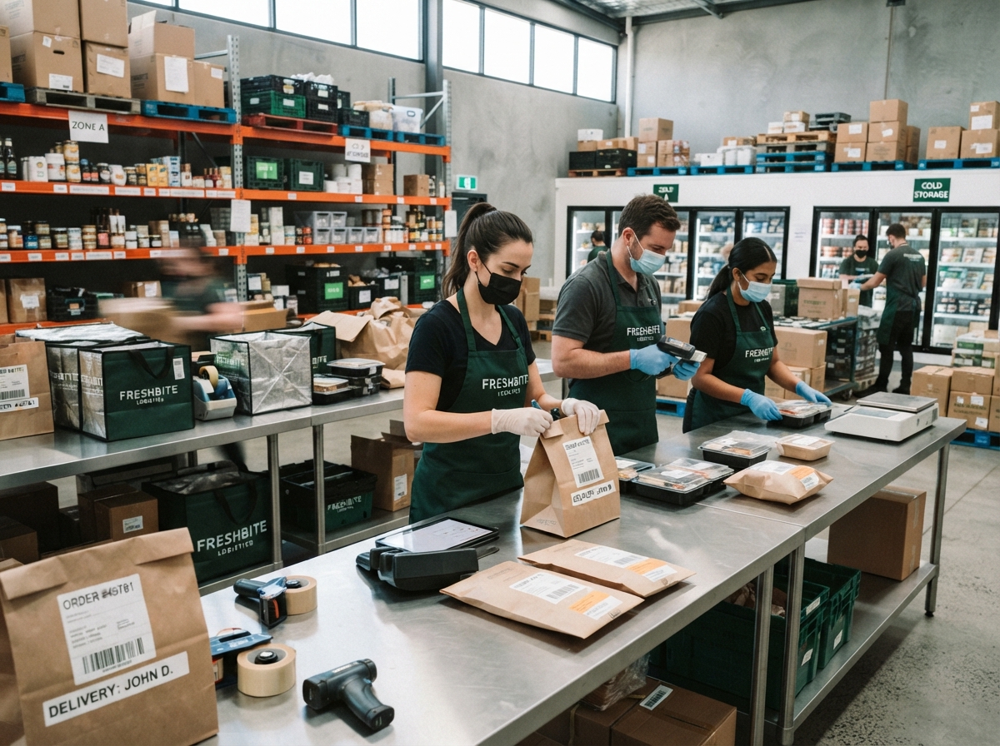

Connected infrastructure.
Supporting food businesses.
WhiteStores brings together storage infrastructure, commerce operations and kitchen support across strategic locations in Bangalore.
Explore how our operational capabilities come together to create an integrated food-commerce infrastructure network.
Strategically positioned near major Bangalore consumption clusters.
An ecosystem designed around food-commerce operations.
Different operational requirements need different capabilities. WhiteStores brings together essential infrastructure and operational support under one connected ecosystem.
 Node 01
Node 01
Storage & Distribution
Storage infrastructure, organised inventory handling and distribution support.
- check Reach-in and walk-in frozen environments
- check Carton-level tracking & documented inward scans
- check Disciplined FIFO/FEFO inventory rotation
 Node 02
Node 02
Commerce Operations
Operational support for food businesses managing multiple commerce channels.
- check Multichannel order intake (Aggregators, Quick-Commerce, D2C)
- check Fast pick & pack with tamper-evident sealing
- check Direct delivery courier handover coordination
 Node 03
Node 03
Quick Kitchen
Kitchen infrastructure and operational support for food preparation activities.
- check On-demand RTE & RTC preparation routines
- check Strict brand SOP and temperature control execution
- check Hygienic prep counters & commercial heating lines
Different capabilities. One operational ecosystem.
How our storage, commerce operations, and kitchen facilities coordinate to deliver a seamless operational backbone.
Storage & Cold Chain Node
Frozen & chilled reach-in banks, structured pallet intake, and lot-level reconciliation with automated batch monitoring.
WhiteStores Operations Core
Unified operating procedures, temperature tracking logs, and active shift handovers linking all operational modules.
Commerce Fulfillment Node
Order ingest, barcode scanning, packing, tamper tape, and instant platform dispatch handover.
Quick Kitchen Prep Node
SOP-guided heating, frying, thawing, assembly, and presentation ready for immediate customer delivery.
Where infrastructure meets everyday operations.
A closer look at how facilities, trained personnel, and structured workflows operate in unison.

Organised Storage & Staging
Every cubic foot of WhiteStores cold and ambient storage is mapped to strict category standards. Reach-in freezers maintain regulated temperatures, eliminating temperature abuse during recurring pick routines.

Precision Order Assembly & Dispatch
Omnichannel orders from aggregators, D2C portals, and express delivery channels converge on standardized packing bays. Secondary packaging, thermal protection, and verified order tags prevent dispatch discrepancies.

Commercial Culinary Execution
Our Quick Kitchen units execute brand-specific kitchen recipes under rigorous hygiene standards. By delegating finishing tasks to trained floor staff, brands scale city-wide presence without building capital-intensive commercial kitchens.
Operational support for different business needs.
Food businesses have different operational requirements depending on their products, channels and working processes. WhiteStores provides infrastructure and operational capabilities to support these needs.
Storage Requirements
Dedicated reach-in and deep freezer capacity, ambient storage provisions, and segregated staging for fast-moving items.
Inventory Handling
Documented inward verification, lot tracking, stock reconciliation, and expiration monitoring across all stored goods.
Commerce Operations
Unified multi-channel order queue handling, packaging execution, and streamlined handover to logistics delivery fleets.
Kitchen Support
On-demand culinary preparation for ready-to-eat and ready-to-cook brands using standardized heating, baking, and frying setups.
Operational Coordination
Single operational point of contact, aligned shift reporting, protocol audits, and cross-functional visibility that ensures operational continuity without overhead burdens.
Interconnected Operational Infrastructure
Purpose-built facilities structured to eliminate friction across the food-commerce value chain. From goods-in receipt to courier handover, WhiteStores acts as an operational extension of your business.
Stock Inward & Temperature Verification
Logged intake against commercial supplier invoice
Reach-in Placement & Batch Rotation
Sub-zero freezer containment under 24/7 logging
Kitchen Finishing or Direct Pick
Triggered by inbound aggregator or D2C orders
Packaging, Seal & Courier Handover
Dispatch staging desk with minimal driver waiting
Let's build stronger food-commerce operations together.
Explore how WhiteStores' infrastructure and operational capabilities can support your business requirements.